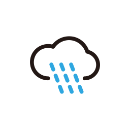
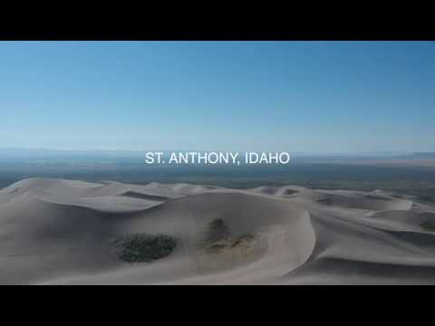

Sand dune
Weather Summary
Currently:
High:
Wind Chill:
Humidity:
Wind Speed:
1
2
3
4
5
5 Days Foreacast
| Monday | Tuesday | Wednesday | Thursday | Friday |
|---|---|---|---|---|
 |
 |
|
 |
Article
The St. Anthony Sand Dunes comprise more than 10,000 acres of quartz sand in the Snake River Plain in Idaho. The dunes can range from 10 feet tall to up to 400 feet tall. They are a popular destination in the summer for sand dune motorsports enthusiasts on ATVs and side-by-side UTVs. In the winter, they are a critical range for elk, deer and grouse. The big dunes are on the west side and include more technical steep riding opportunities including Choke Cherry, Devil's Dunes, and Dead Horse Bowl. The smaller dunes are located on the east side of the dunes and can be accessed most easily from the Red Road Area Access. Egin Lakes area is a good central location for accessing both the smaller dunes and the big dunes and is the closest access point to Thunder Mountain a.k.a. Crapo's Hill. Sand Hills resort is located at the east side of the sand dunes, which are accessible year-round (there can be considerable snow in the winter though). The big dunes are closed in the winter west of Thunder Mountain and Egin Lakes for winter habitat.
